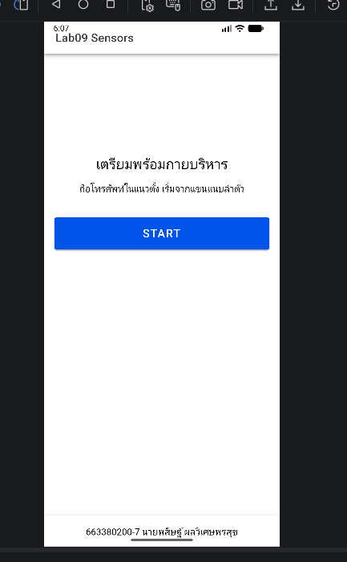
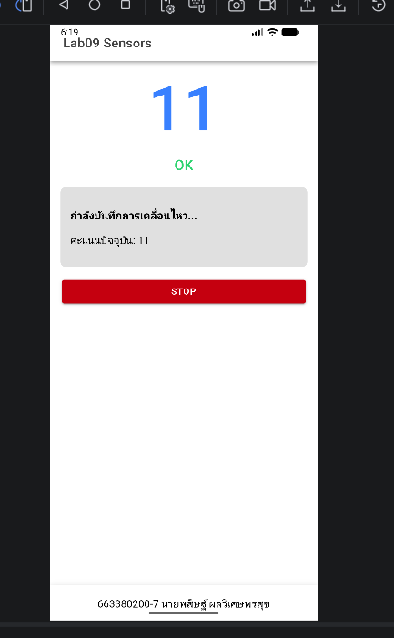
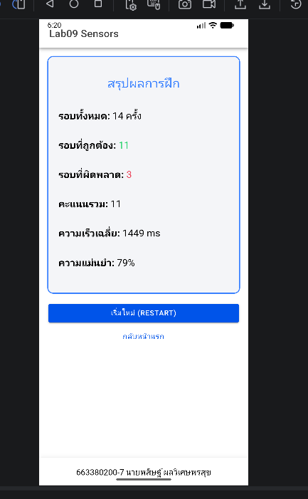

รหัสนักศึกษา: 663380020-7
ชื่อ-สกุล: พสิษฐ์ ผลวิเศษพรสุข



สาธิตการใช้งานแอป กด Start มีเสียงแนะนำ และนับรอบเมื่อยกแขนขึ้นลงได้
ตอบ: ใช้ AI ในการช่วยจัดโครงสร้างหน้า UI Vue.js เพื่อแสดงผลสถิติเปอร์เซ็นต์ความถูกต้อง และช่วยอธิบาย/ประกอบโค้ดส่วนของ Algorithm (State Machine) รวมไปถึงการรวมบริการ TTS และ Haptics เข้าไปใน Engine
ตอบ: ได้ทำการปรับปรุงค่าความหน่วงและค่า Threshold ในไฟล์ ArmWorkoutEngine.ts (เช่น ค่า UP_TH, DOWN_TH) ให้เหมาะสมกับการแกว่งแขนของมือถือผมที่ใช้ทดสอบจริง รวมถึงการตกแต่งหน้าตาแอปให้แสดงข้อมูลสถิติแยกส่วนอย่างชัดเจน และปรับแต่งหน้า lab09.html นี้